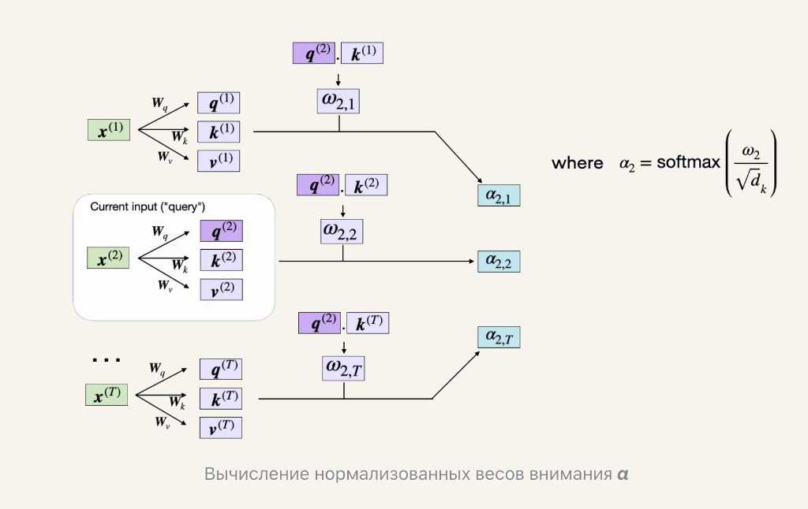

Лекция 2. Эволюция трансформеров к современным LLM-архитектурам04
Нормированные веса внимания

Пример второго токена. Запрос q⁽²⁾ сравнивают с ключом каждой позиции. Деление на √dk стоит внутри softmax.

Пример второго токена. Запрос q⁽²⁾ сравнивают с ключом каждой позиции. Деление на √dk стоит внутри softmax.